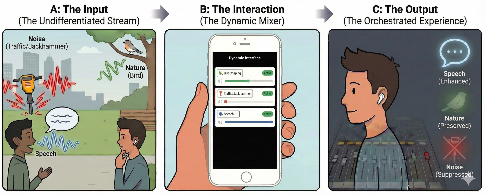

Hearables are becoming ubiquitous, yet their sound controls remain blunt: users can either enable global noise suppression or focus on a single target sound. Real-world acoustic scenes, however, contain many simultaneous sources that users may want to adjust independently. We introduce Aurchestra, the first system to provide fine-grained, real-time soundscape control on resource-constrained hearables. Our system has two key components: (1) a dynamic interface that surfaces only active sound classes and (2) a real-time, on-device multi-output extraction network that generates separate streams for each selected class, achieving robust performance for upto 5 overlapping target sounds and letting users mix their environment by customizing per-class volumes, much like an audio engineer mixes tracks. We optimize the model architecture for multiple compute-limited platforms and demonstrate real-time performance on 6 ms streaming audio chunks. Across real-world environments in previously unseen indoor and outdoor scenarios, our system enables expressive per-class sound control and achieves substantial improvements in target-class enhancement and interference suppression. Our results show that the world need not be heard as a single, undifferentiated stream: with Aurchestra, the soundscape becomes truly programmable.

Aurchestra transforms the auditory world into a programmable studio. Unlike traditional hearables that offer binary noise cancellation (all-or-nothing), Aurchestra enables fine-grained soundscape control. (A) In a complex acoustic scene, (B) the system automatically detects active sound classes (e.g., speech, traffic, birds) and populates a dynamic interface. The user can then “mix” their reality in real-time, (C) independently suppressing interference (traffic) while increasing the volume of some targets (speech) and maintaining others (nature), effectively acting as the audio engineer of their own life.